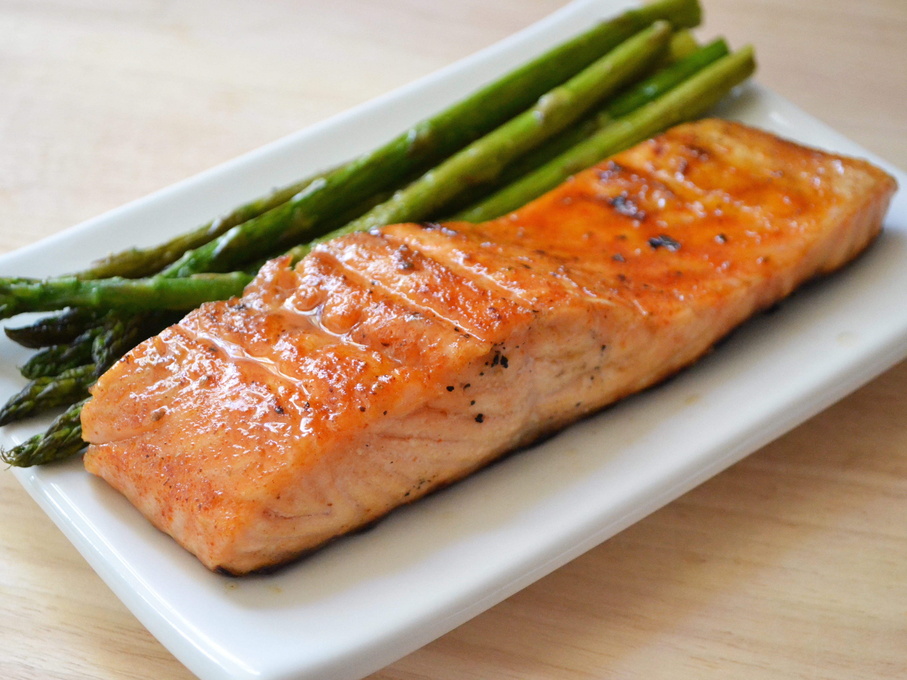

Grilled Salmon Recipe
Return to home page

Description:
A simple soy sauce and brown sugar marinade with hints of lemon and garlic, are the perfect salty-sweet complement to rich salmon fillets.
Ingredients:
- 1.5 lbs Salmon Fillet
- Lemon Pepper
- Garlic Powder
- Pinch of Salt
- 1/3 Cup Soy Sauce
- 1/3 Cup Brown Sugar
- 1/3 Cup Water
- 1/4 Cup Vegetable Oil
Steps:
- Season salmon fillets with lemon pepper, garlic powder, and salt.
- In a small bowl, stir together soy sauce, brown sugar, water, and vegetable oil until sugar is dissolved. Place fish in a large resealable plastic bag with the soy sauce mixture, seal, and turn to coat. Refrigerate for at least 2 hours.
- Garlic Powder
- Preheat grill for medium heat.
- Lightly oil grill grate. Place salmon on the preheated grill, and discard marinade. Cook salmon for 6 to 8 minutes per side, or until the fish flakes easily with a fork.
- Enjoy :)
Nutrition Facts:
Per Serving: 318 calories; protein 20.5g; carbohydrates 13.2g; fat 20.1g; cholesterol 55.8mg; sodium 1091.8mg.